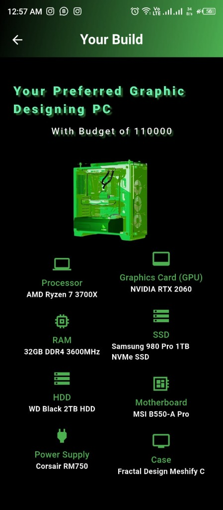
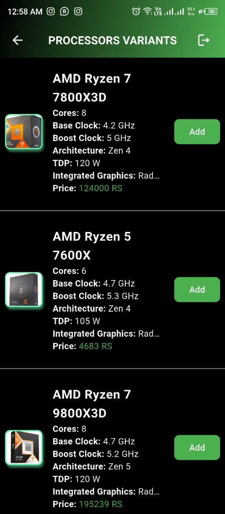
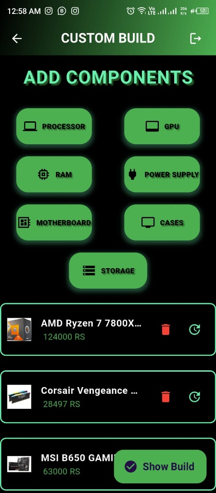
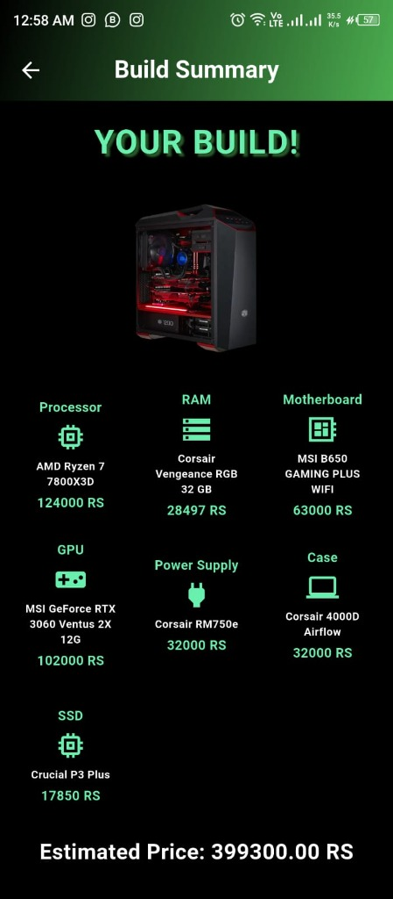
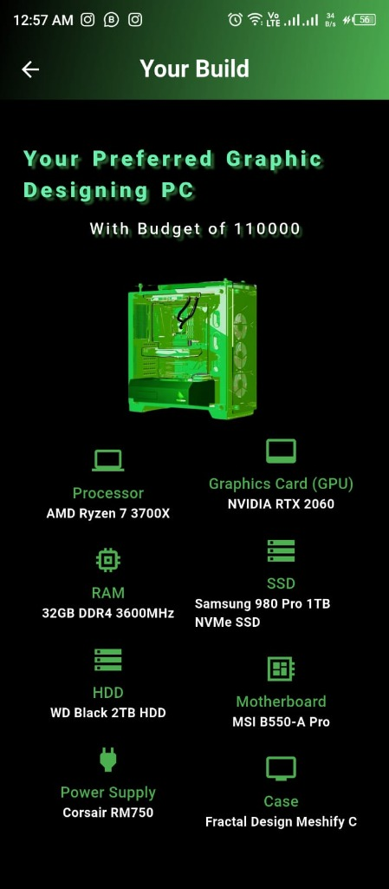
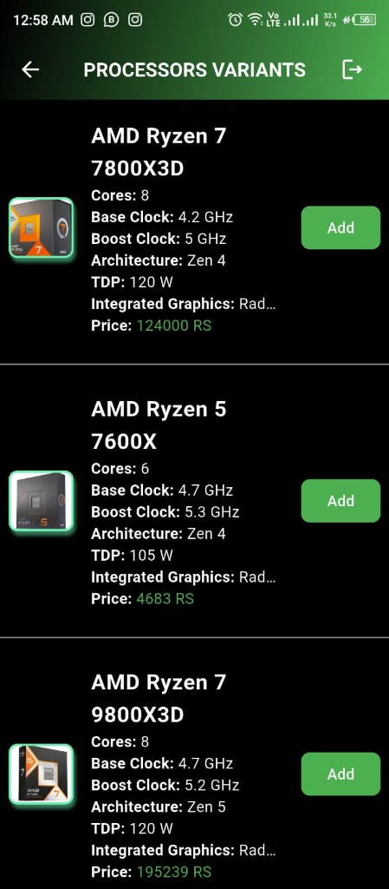
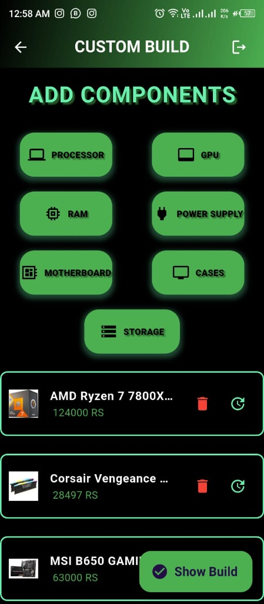
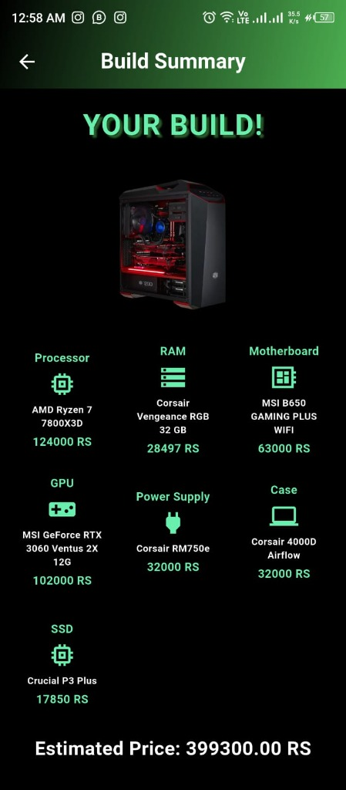
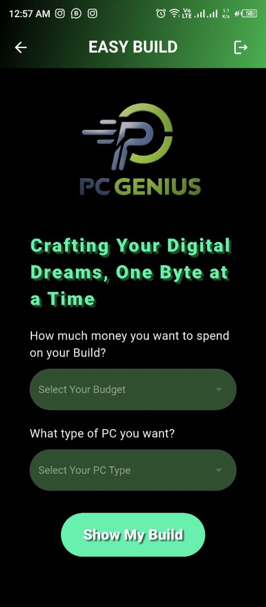
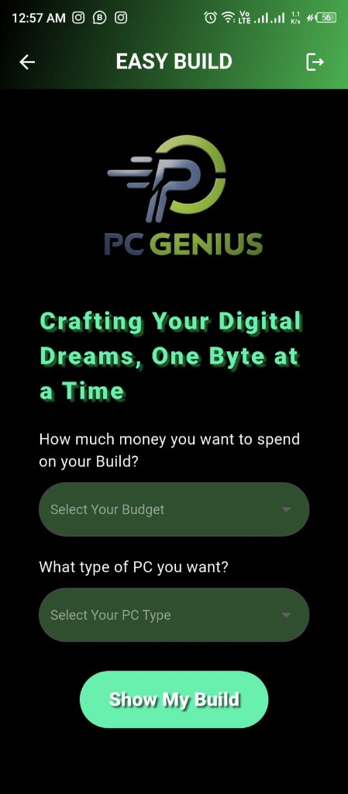

PC Genius
Smart PC Recommendation & Custom Build Estimator
PC Genius is a sophisticated decision-support system designed to demystify the complexities of computer hardware. By bridging the gap between technical specifications and user needs, the application transforms the daunting task of PC building into a streamlined, educational, and error-free experience.
The Challenge
The modern hardware landscape is defined by the Paradox of Choice. With hundreds of combinations of CPUs, GPUs, motherboards, and power supplies, beginners often face "compatibility paralysis." A single mismatched socket or insufficient wattage can lead to expensive mistakes.
For enthusiasts, the challenge is different: efficiency. Manually tracking prices and calculating power draws across multiple browser tabs is tedious and prone to human error. There was a clear need for a centralized tool that could handle the technical validation while focusing on the user's functional goals—whether that's 4K gaming or high-end video editing.
The Solution
PC Genius addresses these hurdles through a dual-module architecture that caters to varying levels of technical literacy. It acts as both an Automated Hardware Consultant and a Granular Management Tool.
The "Easy Build" module utilizes a smart recommendation engine that translates abstract budgets and use-cases into concrete, optimized hardware lists. Meanwhile, the "Custom Build" module provides a sandbox for experts to hand-pick components with real-time feedback on compatibility and cost, eliminating the need for external reference charts and manual math.
Core Capabilities
- Smart Recommendation Engine: Optimized algorithms that match hardware to specific workflows like Gaming, 3D Rendering, or Office Productivity.
- Real-Time Cost Estimation: Dynamic total cost calculation that updates instantly as components are swapped or added.
- Automated Compatibility Check: Behind-the-scenes validation of socket types, RAM speeds, and power requirements.
- Granular Component Sandboxing: Advanced manual selection for enthusiasts who want to pick every specific brand and model.
- Build History Tracking: Save and compare multiple configurations to find the absolute best value for your specific budget.
- Responsive Visual Logic: Highly intuitive UI that uses visual cues to signal component tiers and technical compatibility.
Technical Implementation
Built with Flutter for high-performance cross-platform delivery, the application leverages a reactive state management system to handle complex component dependencies.
The core logic engine operates on a structured repository of hardware data, performing recursive validation on every user interaction. This ensures that the user can never proceed with an illegal build (e.g., an AMD CPU on an Intel Motherboard), providing a safety net that is often missing from generic web-based pickers.
The Impact
PC Genius empowers users by removing the fear factor from technical hardware selection. For first-time builders, it transforms a multi-hour research process into a few confident taps.
By providing clear, budget-aligned recommendations, the app ensures that users maximize their performance-per-dollar, ultimately making the hobby of PC building more accessible, transparent, and enjoyable for a global audience.
Future Roadmap
The vision for PC Genius continues to evolve. Planned updates include integration with major e-commerce APIs for Live Market Pricing and an AR Component Preview mode that allows users to virtually see their selected parts inside a standard case before purchasing.
Interface Preview
 







 
